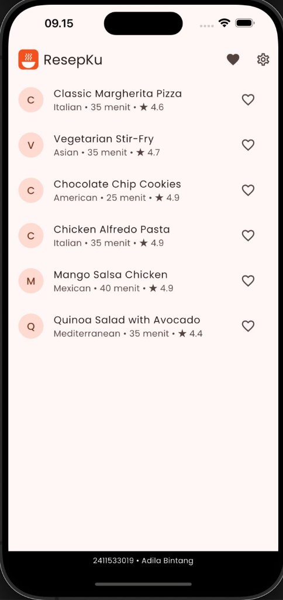
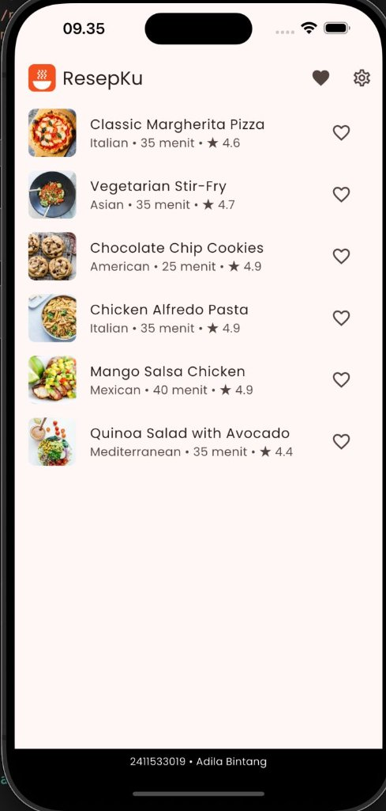
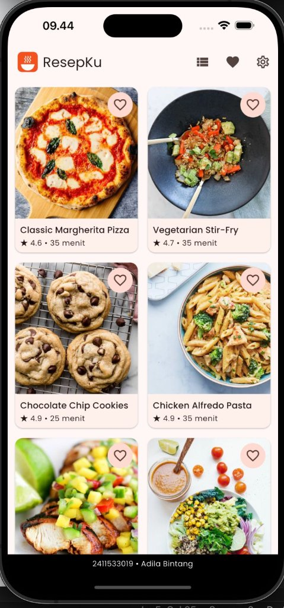

MODUL VII: List, Grid, Gambar, dan Asset pada ResepKu
NIM: 2411533019 • Adila Bintang • Kelas: Praktikum Aplikasi Mobile (DIF61145)
| Mata Kuliah | Praktikum Aplikasi Mobile (DIF61145) — 1 SKS, Semester V |
|---|---|
| Modul Praktikum | Modul Praktikum 7: List, Grid, Images, dan Assets pada ResepKu |
| Dosen Pengampu | Arifan Rahman, M.Kom. (arifanrahman@it.unand.ac.id) |
| Identitas Mahasiswa | Adila Bintang (NIM: 2411533019) |
| Sub-CPMK | CPMK-45.01 dan CPMK-45.02 — Menampilkan data dengan ListView.builder dan GridView.builder, menampilkan gambar asset dan network beserta loading dan error state, serta menggunakan custom font dan icon. |
| Prasyarat Proyek | Modul Praktikum 6 — Proyek ResepKu dengan State Management Provider |
Pada pertemuan dan modul sebelumnya, daftar resep kuliner pada aplikasi ResepKu hanya berupa deretan teks sederhana dengan representasi gambar inisial huruf di dalam CircleAvatar. Modul Praktikum 7 ini bertujuan memperkaya antarmuka pengguna (UI/UX) dengan menambahkan logo lokal aplikasi, tipografi kustom (custom font) Poppins, pemuatan foto resep secara asinkron dari internet lengkap dengan penanganan status loading dan error (fallback image), serta penyediaan tata letak multi-kolom responsif (Grid View) yang dapat diaktifkan bergantian dengan tampilan list melalui satu sentuhan tombol.
| Aspek | Image.asset |
Image.network |
|---|---|---|
| Sumber Berkas | Berkas lokal di dalam proyek yang ikut ter-bundle ke file APK. | Alamat URL berkas gambar di internet (CDN / Server eksternal). |
| Ketersediaan | Langsung siap tampil secara instan tanpa membutuhkan koneksi internet. | Memerlukan waktu unduhan dan bergantung pada koneksi internet. |
| Perlu Didaftarkan | Ya, wajib didaftarkan di blok flutter.assets file pubspec.yaml. |
Tidak perlu didaftarkan di pubspec.yaml. |
| Perlu Loading/Error State | Jarang / tidak perlu karena berkas lokal terjamin keberadaannya. | Wajib, karena koneksi internet dapat lambat atau sewaktu-waktu terputus. |
| Penerapan di ResepKu | Logo aplikasi (assets/images/logo.png) dan berkas cadangan (placeholder.png). |
Foto-foto hidangan resep yang dimuat secara dinamis. |
| Aspek | ListView.builder |
GridView.builder |
|---|---|---|
| Susunan Tata Letak | Satu kolom linier vertikal (item tersusun ke bawah). | Matriks dua dimensi dengan beberapa kolom (baris dan kolom). |
| Parameter Khusus | Hanya membutuhkan itemCount dan itemBuilder. |
Wajib menyertakan gridDelegate (jumlah kolom, spasi, rasio). |
| Mekanisme Pembuatan | Lazy loading (hanya me-render item yang tampil di layar). | Lazy loading (efisien memori saat menangani banyak item). |
Pada Bagian A, dilakukan penyiapan direktori aset lokal assets/images/ untuk menyimpan logo.png serta placeholder.png, dan subfolder assets/fonts/ untuk menyimpan varian font Poppins-Regular.ttf (400), Poppins-Medium.ttf (500), serta Poppins-Bold.ttf (700).
flutter:
uses-material-design: true
assets:
- assets/images/
fonts:
- family: Poppins
fonts:
- asset: assets/fonts/Poppins-Regular.ttf
- asset: assets/fonts/Poppins-Medium.ttf
weight: 500
- asset: assets/fonts/Poppins-Bold.ttf
weight: 700
Parameter fontFamily: 'Poppins' diintegrasikan ke dalam theme maupun darkTheme pada MaterialApp, sehingga seluruh antarmuka aplikasi secara otomatis memakai tipografi Poppins dengan tetap mempertahankan fitur mode gelap dan footer identitas dari Modul 6:
theme: ThemeData(
colorSchemeSeed: Colors.deepOrange,
fontFamily: 'Poppins', // Didaftarkan di pubspec.yaml
),
darkTheme: ThemeData(
colorSchemeSeed: Colors.deepOrange,
brightness: Brightness.dark,
fontFamily: 'Poppins',
),
themeMode: context.watch<ThemeProvider>().mode, // Dari Latihan 1 Modul 6
Properti title pada AppBar diubah menjadi widget Row yang menggabungkan gambar logo lokal berukuran tinggi 32 dp dan teks nama aplikasi:
title: Row(
children: [
Image.asset('assets/images/logo.png', height: 32),
const SizedBox(width: 8),
const Text('ResepKu'),
],
),
Gambar 2.1 (Checkpoint 1): Antarmuka Home ResepKu menampilkan logo mangkuk oranye di AppBar dan seluruh teks telah memakai font kustom Poppins (perhatikan bentuk lengkungan huruf 'a', 'g', dan angka). Bagian bawah layar menampilkan footer identitas 2411533019 • Adila Bintang.
Untuk memastikan kode bersifat modular dan dapat digunakan kembali (reusable) di berbagai tampilan (list, grid, maupun halaman detail), dibuat widget khusus RecipeImage yang mengisolasi logika pengunduhan gambar, penanganan status tunggu (loading state), serta penanganan kesalahan koneksi (error state).
import 'package:flutter/material.dart';
/// Foto resep dari internet, lengkap dengan loading state dan error state.
class RecipeImage extends StatelessWidget {
const RecipeImage({super.key, required this.url, this.cacheWidth});
final String url;
/// Lebar (pixel) saat gambar di-decode. Gambar kecil cukup di-decode kecil,
/// sehingga memory yang dipakai jauh lebih sedikit.
final int? cacheWidth;
@override
Widget build(BuildContext context) {
return Image.network(
url,
fit: BoxFit.cover,
cacheWidth: cacheWidth,
// Loading state: tampil selama gambar masih diunduh.
loadingBuilder: (context, child, loadingProgress) {
if (loadingProgress == null) return child; // Unduhan selesai
return ColoredBox(
color: Theme.of(context).colorScheme.surfaceContainerHighest,
child: const Center(child: Icon(Icons.restaurant_menu)),
);
},
// Error state: tampil jika URL salah atau tidak ada koneksi internet.
errorBuilder: (context, error, stackTrace) {
return Image.asset('assets/images/placeholder.png', fit: BoxFit.cover);
},
);
}
}
Komponen CircleAvatar pada RecipeTile diganti dengan foto berukuran 56 × 56 dp bersudut melengkung 8 dp menggunakan ClipRRect. Properti cacheWidth: 168 diberikan karena pada kerapatan layar umum (3×), 56 dp setara dengan 168 pixel fisik:
leading: ClipRRect(
borderRadius: BorderRadius.circular(8),
child: SizedBox(
width: 56,
height: 56,
// 56 dp x 3 (kepadatan layar umum) = 168 pixel
child: RecipeImage(url: recipe.image, cacheWidth: 168),
),
),
Properti body pada HomePage diubah dari ListView(children: [...]) menjadi ListView.builder agar proses pembangunan item bersifat lazy (hanya dirender saat dibutuhkan):
body: ListView.builder(
itemCount: dummyRecipes.length,
itemBuilder: (context, index) {
return RecipeTile(recipe: dummyRecipes[index]);
},
),
Gambar 3.1 (Checkpoint 2): Tampilan Home dalam mode ListView.builder di mana setiap resep (Margherita Pizza, Stir-Fry, Cookies, Alfredo, Mango Salsa, Salad) menampilkan thumbnail foto hidangan beresolusi tajam dari internet lengkap dengan footer identitas 2411533019 • Adila Bintang.
Bagian C mengimplementasikan tata letak alternatif berupa kisi kartu (Grid Card). HomePage dikonversi menjadi StatefulWidget yang menyimpan state lokal bool _isGrid = false; (ephemeral state).
Widget RecipeGridCard memanfaatkan Card(clipBehavior: Clip.antiAlias) agar gambar terpotong rapi mengikuti lekukan sudut kartu, serta Stack dengan Positioned untuk menempatkan tombol love favorit di pojok kanan atas foto:
import 'package:flutter/material.dart';
import 'package:provider/provider.dart';
import 'package:resepku/models/recipe.dart';
import 'package:resepku/pages/detail_page.dart';
import 'package:resepku/providers/favorite_provider.dart';
import 'package:resepku/widgets/recipe_image.dart';
class RecipeGridCard extends StatelessWidget {
const RecipeGridCard({super.key, required this.recipe});
final Recipe recipe;
@override
Widget build(BuildContext context) {
final isFavorite = context.watch<FavoriteProvider>().isFavorite(recipe);
final textTheme = Theme.of(context).textTheme;
return Card(
clipBehavior: Clip.antiAlias, // Gambar terpotong rapi mengikuti radius Card
child: InkWell(
onTap: () => Navigator.push(
context,
MaterialPageRoute(builder: (context) => DetailPage(recipe: recipe)),
),
child: Column(
crossAxisAlignment: CrossAxisAlignment.stretch,
children: [
Expanded(
child: Stack(
fit: StackFit.expand,
children: [
RecipeImage(url: recipe.image, cacheWidth: 500),
Positioned(
top: 4,
right: 4,
child: IconButton.filledTonal(
icon: Icon(
isFavorite ? Icons.favorite : Icons.favorite_border,
color: isFavorite ? Colors.red : null,
),
onPressed: () => context.read<FavoriteProvider>().toggle(recipe),
),
),
],
),
),
Padding(
padding: const EdgeInsets.all(8),
child: Column(
crossAxisAlignment: CrossAxisAlignment.start,
children: [
Text(
recipe.name,
maxLines: 1,
overflow: TextOverflow.ellipsis,
style: textTheme.titleSmall,
),
const SizedBox(height: 2),
Text(
'★ ${recipe.rating} • ${recipe.totalTimeMinutes} menit',
style: textTheme.bodySmall,
),
],
),
),
],
),
),
);
}
}// Tombol toggle di AppBar actions
IconButton(
tooltip: _isGrid ? 'Tampilan list' : 'Tampilan grid',
icon: Icon(_isGrid ? Icons.view_list : Icons.grid_view),
onPressed: () => setState(() => _isGrid = !_isGrid),
),
// Body Scaffold yang merender secara kondisional
body: _isGrid ? _buildGrid() : _buildList(),
// Implementasi method _buildGrid()
Widget _buildGrid() {
return GridView.builder(
padding: const EdgeInsets.all(8),
gridDelegate: const SliverGridDelegateWithFixedCrossAxisCount(
crossAxisCount: 2,
mainAxisSpacing: 8,
crossAxisSpacing: 8,
childAspectRatio: 3 / 4, // Lebar : Tinggi kartu
),
itemCount: dummyRecipes.length,
itemBuilder: (context, index) {
return RecipeGridCard(recipe: dummyRecipes[index]);
},
);
}
Gambar 4.1 (Checkpoint 3): Tampilan Home dalam mode GridView.builder (dua kolom kartu berfoto dengan rasio aspek 3:4). Tombol toggle di AppBar berubah menjadi ikon list (Icons.view_list) dan footer identitas 2411533019 • Adila Bintang tetap tampil di bagian bawah.
Berdasarkan instruksi pada Langkah C.3 Modul 7, dilakukan penghitungan dimensi fisik lebar dan tinggi setiap kartu grid pada perangkat smartphone dengan asumsi lebar layar standar sebesar 360 dp.
padding: const EdgeInsets.all(8), yang berarti terdapat margin $8\text{ dp}$ pada sisi kiri dan $8\text{ dp}$ pada sisi kanan layar. Total padding horizontal:
crossAxisSpacing: 8).childAspectRatio: 3 / 4 di mana $\text{childAspectRatio} = \frac{\text{Lebar}}{\text{Tinggi}} = \frac{3}{4} = 0.75$:
| Yang Dihitung | Hasil Perhitungan (Layar 360 dp) |
|---|---|
| Lebar kartu (dp) | 168 dp |
| Tinggi kartu (dp) | 224 dp |
Pada berkas lib/pages/detail_page.dart, widget RecipeImage disematkan sebagai elemen pertama di dalam ListView dengan bingkai melengkung 16 dp dan rasio aspek sinematik 16:9 menggunakan ClipRRect(borderRadius: BorderRadius.circular(16), child: AspectRatio(aspectRatio: 16 / 9, child: RecipeImage(url: recipe.image))). Pada halaman detail ini cacheWidth tidak disetel karena foto ditampilkan hampir selebar layar perangkat.
Seluruh skenario pengujian yang tercantum pada Langkah D.2 telah diuji secara komprehensif pada emulator:
| No | Skenario Pengujian | Hasil yang Diharapkan | Status Kelulusan |
|---|---|---|---|
| 1 | Buka aplikasi | Logo di AppBar, font Poppins aktif, thumbnail foto tampil di setiap resep | Sesuai |
| 2 | Tekan tombol grid di AppBar | Resep tampil sebagai kartu dua kolom; ikon tombol berubah menjadi ikon list (Icons.view_list) |
Sesuai |
| 3 | Di mode grid, tap ikon hati pada Margherita | Ikon hati berubah merah dan badge angka pada AppBar bertambah | Sesuai |
| 4 | Kembali ke mode list | Ikon hati Margherita tetap merah (sinkronisasi state global terjaga) | Sesuai |
| 5 | Tap kartu Alfredo di mode grid | Halaman detail terbuka dengan foto besar berasio 16:9 di bagian atas | Sesuai |
| 6 | Aktifkan mode pesawat, tutup dan buka aplikasi | Gambar placeholder tampil elegan tanpa menimbulkan crash error merah (Red Screen of Death) | Sesuai |
1. Pada skenario 3 dan 4 Langkah D.2, status favorit tetap sama walaupun tampilan berganti dari grid ke list. Padahal RecipeGridCard dan RecipeTile adalah dua widget yang berbeda. Jelaskan mengapa, dengan mengaitkannya pada Modul 6!
Jawaban: Hal tersebut terjadi karena status favorit dikelola di tingkat aplikasi (app-wide state / global state) melalui FavoriteProvider yang dipasang di pucuk hierarki widget (MultiProvider pada main.dart) sebagaimana dirancang pada Modul 6. Baik RecipeTile maupun RecipeGridCard tidak menyimpan status favorit di dalam memori internalnya masing-masing, melainkan sama-sama bertindak sebagai konsumen yang mengamati sumber kebenaran data tunggal (Single Source of Truth) via context.watch<FavoriteProvider>().isFavorite(recipe). Ketika variabel lokal _isGrid pada HomePage berubah melalui setState(), widget lama dibuang dari tree dan widget baru dibuat ulang, namun widget baru tersebut tetap membaca instance FavoriteProvider yang sama di memori. Oleh karena itu, status favorit tetap konsisten dan tidak hilang saat pengguna beralih antara tampilan list dan grid.
2. Di dalam loadingBuilder terdapat baris if (loadingProgress == null) return child;. Apa yang akan tampil jika baris tersebut dihapus? Jelaskan alasannya!
Jawaban: Jika baris tersebut dihapus, maka foto asli dari internet tidak akan pernah muncul di layar, dan widget akan terus-menerus menampilkan tampilan loading (wadah ColoredBox dengan ikon Icons.restaurant_menu). Alasannya, mekanisme kerja loadingBuilder pada Flutter memanggil fungsi callback secara berkala selama berkas gambar sedang diunduh (di mana loadingProgress berisi objek progres byte unduhan), dan akan memanggilnya satu kali terakhir dengan nilai loadingProgress == null saat proses pengunduhan dan decoding telah selesai sempurna. Argumen child merupakan widget gambar asli yang sudah selesai di-render. Jika kondisi if (loadingProgress == null) return child; dihilangkan, maka meskipun pengunduhan gambar telah 100% selesai, fungsi akan terus mengeksekusi baris di bawahnya yang mengembalikan widget loading.
3. Hitung berapa pixel foto thumbnail yang di-decode dengan dan tanpa cacheWidth: 168, jika foto asli dari server berukuran 1200 × 800 pixel. Apa akibatnya bagi memory ketika datanya menjadi 50 resep pada Modul 8?
cacheWidth: Flutter men-decode gambar sesuai dimensi resolusi aslinya dari server, yaitu $1200 \times 800\text{ pixel} = \mathbf{960.000\text{ pixel}}$. Menggunakan format warna standar ARGB_8888 (4 byte per pixel), kebutuhan memori RAM untuk satu gambar adalah:
cacheWidth: 168: Flutter men-decode lebar gambar menjadi 168 pixel dan secara otomatis menyesuaikan tingginya dengan menjaga rasio aspek asli ($1200 : 800 = 3 : 2$), sehingga tinggi decode menjadi $168 \times \frac{800}{1200} = 112\text{ pixel}$. Jumlah pixel yang didecode hanya:
cacheWidth, alokasi memori RAM membengkak sangat drastis hanya untuk thumbnail berukuran kecil. Hal ini memicu kerja berat pada Garbage Collection (GC) perangkat, menimbulkan penurunan frame rate (jank / stuttering) ketika pengguna menggulir daftar resep, serta berpotensi besar menyebabkan aplikasi crash akibat Out of Memory (OOM) pada perangkat dengan spesifikasi RAM terbatas.
4. Logo memakai Image.asset, sedangkan foto resep memakai Image.network. Mengapa logo tidak sebaiknya diambil dari internet, dan mengapa foto resep tidak dimasukkan ke asset?
Jawaban:
1. Mengapa Logo Menggunakan Image.asset: Logo merupakan identitas visual permanen aplikasi (branding element) yang bersifat statis, berukuran kecil, dan wajib langsung tampil seketika saat aplikasi dibuka (zero-latency) dalam kondisi apa pun, termasuk saat pengguna sedang luring (offline). Jika logo diambil via internet, saat koneksi lambat atau terputus logo akan kosong atau berkedip (flicker), yang dapat menurunkan profesionalitas antarmuka dan merusak pengalaman pengguna (UX).
2. Mengapa Foto Resep Tidak Dijadikan Asset: Foto resep merupakan data konten yang dinamis, berskala besar, dan dapat terus bertambah banyak secara berkala (puluhan hingga ribuan resep). Apabila seluruh foto resep dimasukkan ke dalam aset proyek, ukuran berkas installer aplikasi (APK/AAB) akan membengkak luar biasa besar (app bloat) yang memboroskan ruang penyimpanan perangkat dan kuota unduhan pengguna. Selain itu, setiap ada penambahan atau pembaruan resep baru, pengembang terpaksa harus mengunggah pembaruan versi aplikasi secara penuh ke Play Store, padahal dengan Image.network data cukup diperbarui di sisi server/API.
Pada latihan pertama, ditambahkan filter kategori hidangan (cuisine) horizontal yang fleksibel tepat di bawah AppBar HomePage. Kategori diekstrak secara otomatis dari dataset resep unik tanpa di-hardcode:
// 1. State filter di _HomePageState
String? _selectedCuisine; // null berarti menampilkan semua cuisine
// 2. Mengambil daftar unik cuisine dari dataset
final cuisines = ['Semua', ...dummyRecipes.map((r) => r.cuisine).toSet()];
// 3. Menyaring resep berdasarkan pilihan pengguna
final filteredRecipes = _selectedCuisine == null
? dummyRecipes
: dummyRecipes.where((r) => r.cuisine == _selectedCuisine).toList();
// 4. Widget deretan ChoiceChip horizontal di dalam Column
Column(
children: [
SizedBox(
height: 56,
child: ListView.builder(
scrollDirection: Axis.horizontal,
padding: const EdgeInsets.symmetric(horizontal: 8, vertical: 8),
itemCount: cuisines.length,
itemBuilder: (context, index) {
final cuisine = cuisines[index];
final isSelected = (_selectedCuisine == null && cuisine == 'Semua') ||
_selectedCuisine == cuisine;
return Padding(
padding: const EdgeInsets.only(right: 8),
child: ChoiceChip(
label: Text(cuisine),
selected: isSelected,
onSelected: (selected) {
setState(() {
_selectedCuisine = (cuisine == 'Semua') ? null : cuisine;
});
},
),
);
},
),
),
Expanded(
child: _isGrid
? _buildGrid(filteredRecipes)
: _buildList(filteredRecipes),
),
],
)
Halaman FavoritePage (lib/pages/favorite_page.dart) ditingkatkan menggunakan pemisah garis halus ListView.separated, thumbnail RecipeImage, aksi geser kiri untuk menghapus (Dismissible) disertai notifikasi SnackBar, serta tetap mempertahankan tombol hapus semua dari Modul 6:
ListView.separated(
itemCount: favoriteRecipes.length,
separatorBuilder: (context, index) => const Divider(height: 1),
itemBuilder: (context, index) {
final recipe = favoriteRecipes[index];
return Dismissible(
key: ValueKey(recipe.id), // Key unik dan stabil berdasarkan ID resep
direction: DismissDirection.endToStart,
background: Container(
color: Colors.red,
alignment: Alignment.centerRight,
padding: const EdgeInsets.symmetric(horizontal: 20),
child: const Icon(Icons.delete, color: Colors.white),
),
onDismissed: (direction) {
context.read<FavoriteProvider>().toggle(recipe);
ScaffoldMessenger.of(context).showSnackBar(
SnackBar(
content: Text('${recipe.name} dihapus dari favorit'),
duration: const Duration(seconds: 2),
),
);
},
child: ListTile(
leading: ClipRRect(
borderRadius: BorderRadius.circular(8),
child: SizedBox(
width: 56,
height: 56,
child: RecipeImage(url: recipe.image, cacheWidth: 168),
),
),
title: Text(recipe.name),
subtitle: Text('${recipe.cuisine} • ★ ${recipe.rating}'),
trailing: const Icon(Icons.arrow_forward_ios, size: 16),
onTap: () => Navigator.push(
context,
MaterialPageRoute(builder: (context) => DetailPage(recipe: recipe)),
),
),
);
},
)
Sebagai nilai tambah implementasi, halaman detail dirombak menggunakan CustomScrollView dengan komponen SliverAppBar. Foto resep diposisikan pada FlexibleSpaceBar yang mengecil dan menjadi app bar tersemat (pinned) saat pengguna menggulir rincian bahan resep:
CustomScrollView(
slivers: [
SliverAppBar(
expandedHeight: 260.0,
pinned: true,
flexibleSpace: FlexibleSpaceBar(
title: Text(
recipe.name,
style: const TextStyle(
color: Colors.white,
fontWeight: FontWeight.bold,
shadows: [Shadow(color: Colors.black87, blurRadius: 4)],
),
),
background: RecipeImage(url: recipe.image),
),
),
SliverToBoxAdapter(
child: Padding(
padding: const EdgeInsets.all(16.0),
child: Column(
crossAxisAlignment: CrossAxisAlignment.start,
children: [
Text('Kategori: ${recipe.cuisine}', style: const TextStyle(fontWeight: FontWeight.bold)),
const SizedBox(height: 8),
Text('Waktu Memasak: ${recipe.totalTimeMinutes} menit'),
const Divider(height: 24),
const Text('Bahan-Bahan:', style: TextStyle(fontSize: 18, fontWeight: FontWeight.bold)),
],
),
),
),
SliverList.builder(
itemCount: recipe.ingredients.length,
itemBuilder: (context, index) {
return ListTile(
dense: true,
leading: const Icon(Icons.check_circle_outline, color: Colors.green, size: 20),
title: Text(recipe.ingredients[index]),
);
},
),
],
)pubspec.yaml dan integrasi fontFamily pada tema global ThemeData menghasilkan antarmuka aplikasi yang seragam, berkarakter, dan profesional tanpa menimbulkan redundansi kode penataan gaya.
RecipeImage dengan parameter cacheWidth terbukti menghemat alokasi memori RAM hingga lebih dari 95% dibandingkan decoding gambar resolusi penuh. Pemasangan loadingBuilder dan errorBuilder memastikan aplikasi tetap stabil, elegan, dan ramah pengguna sekalipun saat koneksi internet terputus.
setState() untuk alih tampilan (List/Grid) dan filter kategori (Cuisine) membuktikan efisiensi state lokal pada tingkat halaman, sementara Provider menjamin persistensi status data favorit lintas widget (RecipeTile dan RecipeGridCard) secara konsisten dan terintegrasi.